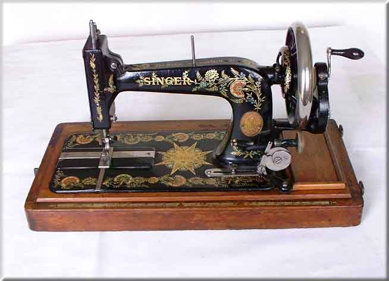

'Indian Star' 48K - 1903

Picture Courtesy of Claire Sherwell
©
Alan Quinn 2001. All Rights Reserved .
This web
site may not be reproduced or distributed in part or in whole without the
prior written permission of the copyright owner.